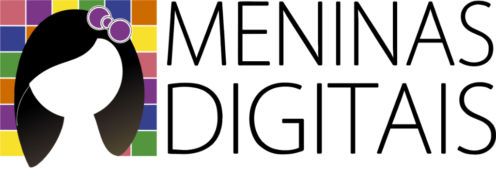
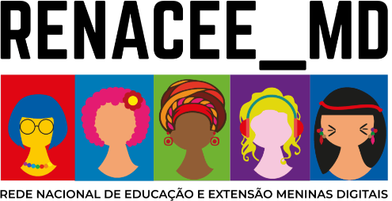

O mundo da tecnologia também é o seu lugar.
O Meninas Digitais UFSC leva oficinas, desafios e conversas sobre tecnologia para meninas que querem descobrir o que dá para criar com computação.
Nossas Ações
Veja o que andamos fazendo. Os posts do nosso Instagram aparecem aqui e se renovam sempre que algo novo é publicado.
Publicações
Artigos, estudos e vídeos produzidos pelo projeto. Abra para ler ou assistir, e baixe o PDF quando estiver disponível.
Nenhuma publicação nesta categoria ainda.
Quem somos
Somos um projeto de extensão da Universidade Federal de Santa Catarina. Estudantes, professoras e voluntárias se juntam para mostrar a meninas da educação básica que a computação também é lugar delas.
Fazemos parte do programa Meninas Digitais da Sociedade Brasileira de Computação, uma rede de projetos de todo o Brasil com o mesmo objetivo: mais mulheres na tecnologia.
UFSC
Oficinas, mentorias e eventos feitos por quem estuda e trabalha com computação na universidade.
SBC
Rede nacional que reúne projetos parceiros e valoriza as ações de cada um.
Como participar
É simples, e você pode começar hoje.
Conheça as ações
Veja nossos posts e descubra o que acontece nas oficinas e eventos.
Fale com a gente
Preencha o formulário, escolhendo o perfil que combina com você.
Participe
Entramos em contato para contar as próximas atividades e como se inscrever.
Reconhecimentos
- 2023Prêmio Destaque UFSCExtensão universitária
- 2022Menção Honrosa Meninas DigitaisSociedade Brasileira de Computação
- 2021Destaque em Inclusão e DiversidadeEvento regional de computação
Dados de exemplo: trocar pelos reais.
Fale com a gente
Quer participar das oficinas, receber o projeto na sua escola, ser voluntária ou apoiar? Conte um pouco sobre você e respondemos por e-mail.
Apoio e Parceiros
Instituições e iniciativas parceiras que apoiam e fortalecem as ações do Meninas Digitais UFSC.

